Orca · native iOS
Current repository iOS app, captured in iPhone Simulator with synthetic mail. Simulator build; the installed TestFlight binary was not accessed. No personal device used. Existing native long-press conversation moves, sender-wide moves, creating a sender View, and adding to an existing View passed in both themes. These are native iOS reference screenshots; the sentence-selection implementation in this PR changes the web app.
Light
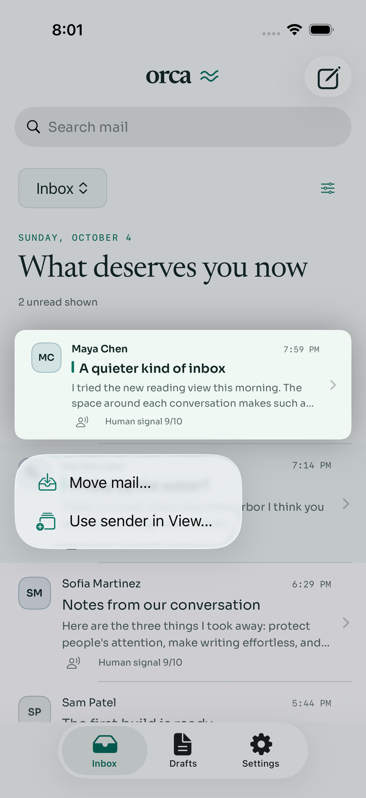
Long-press actions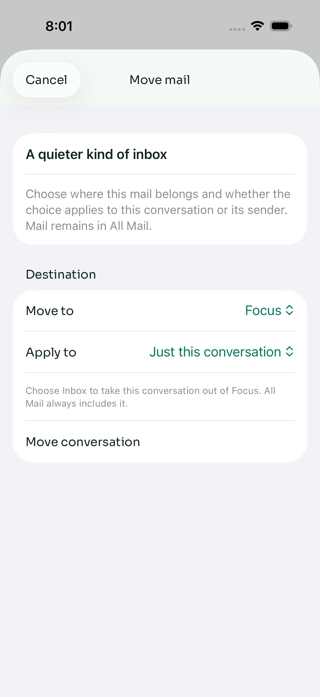
Move one conversation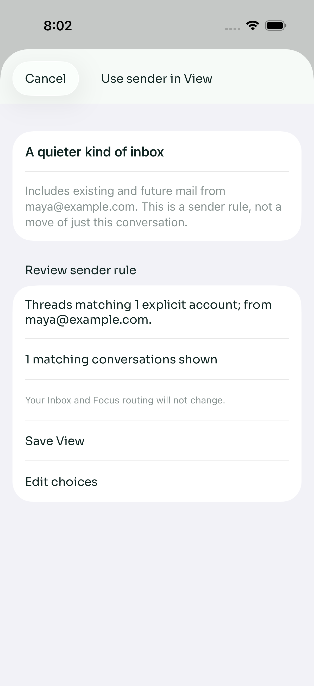
Create sender View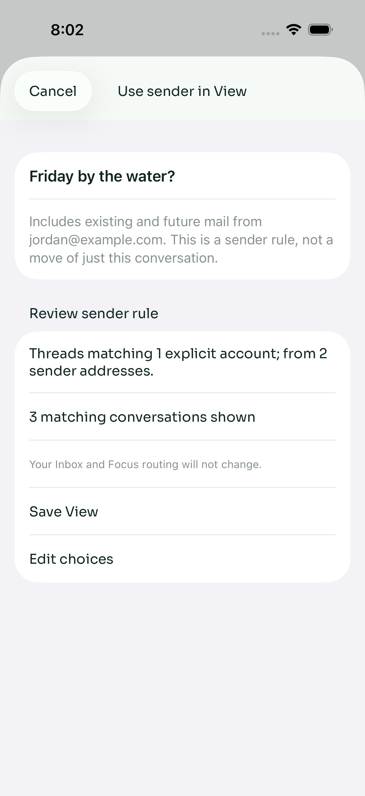
Add sender to existing View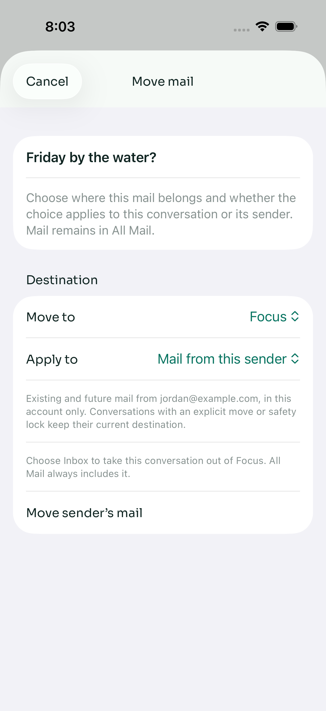
Move mail from a sender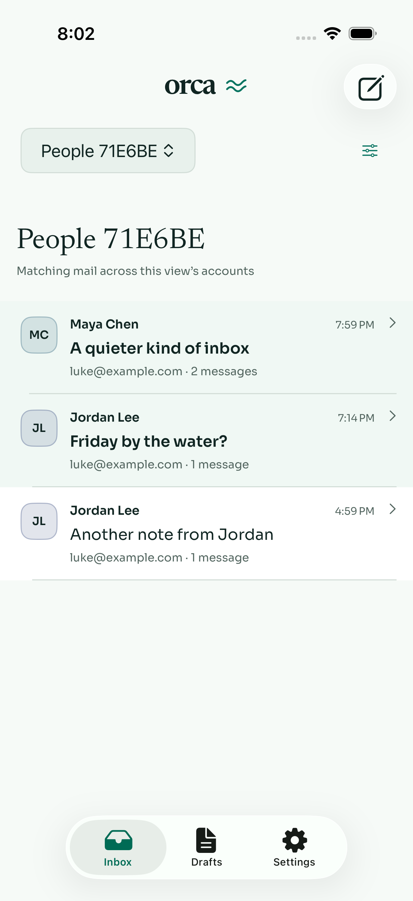
Saved View resultsDark
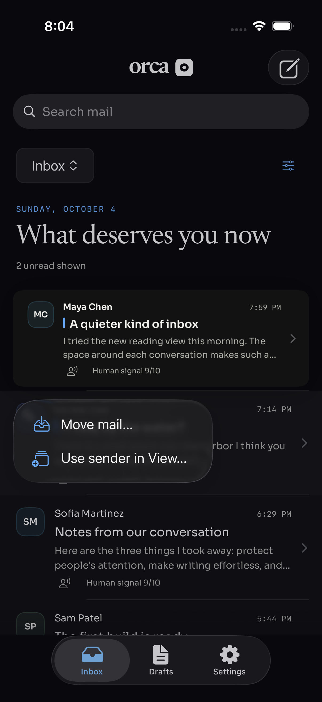
Long-press actions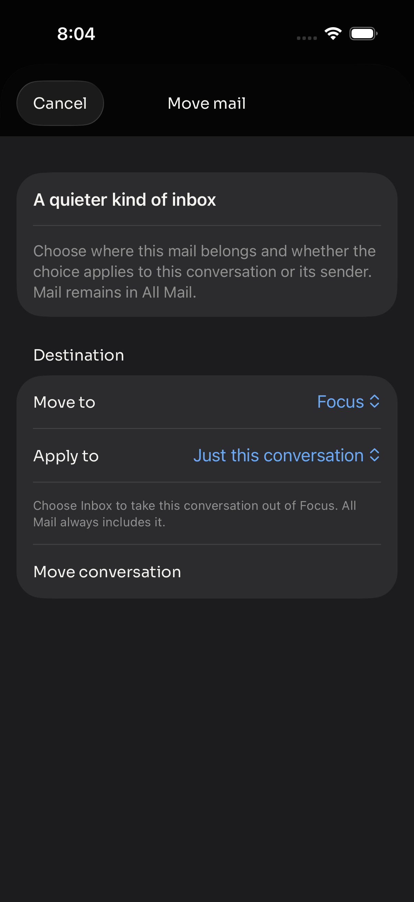
Move one conversation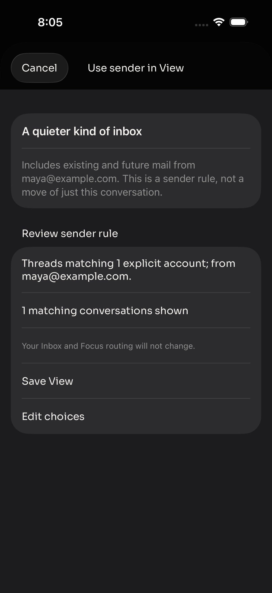
Create sender View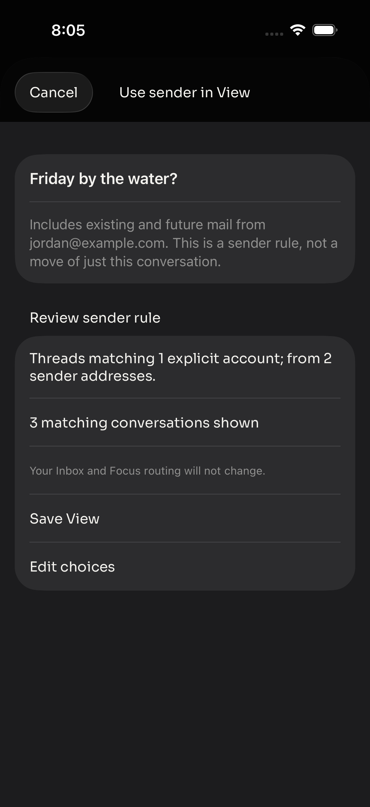
Add sender to existing View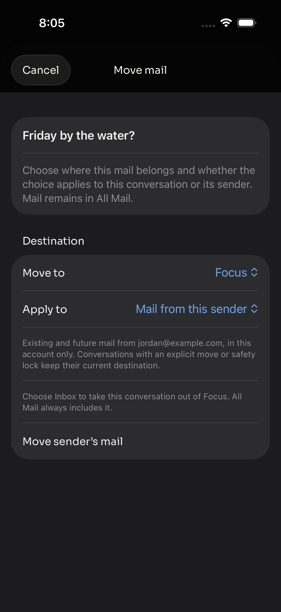
Move mail from a sender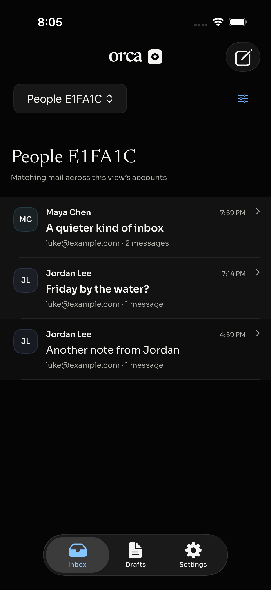
Saved View results